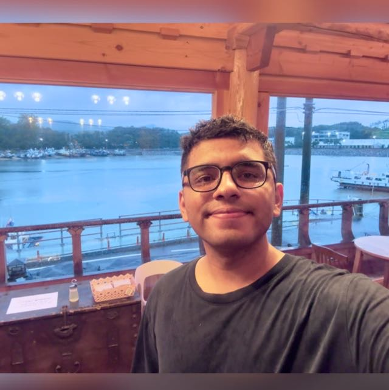

PhD Researcher | Generative Models | Vision-Language | Implicit Learning
I am currently pursuing a Ph.D. in Artificial Intelligence at Kyung Hee University Global Campus, where I am a member of the Machine Learning and Visual Computing (MLVC) Lab, under the supervision of Professor Sung Ho Bae.
Previously, I served as a Research Assistant at the Center for Intelligent Systems and Security (CISS) at the Information Technology University, Lahore, under the guidance of Dr. Qasim Mehmood. My work involved developing intelligent pathology systems for automated malaria detection. I also explored deep learning techniques for nanostructure response estimation and conducted an in-depth study on iterative solvers for inverse problems.
I hold a Bachelor’s degree in Electronics Engineering from the University of Engineering and Technology, Taxila, where I conducted my undergraduate research under the supervision of Dr. Furqan Shaukat and Dr. Laiq Rehman Shahid.